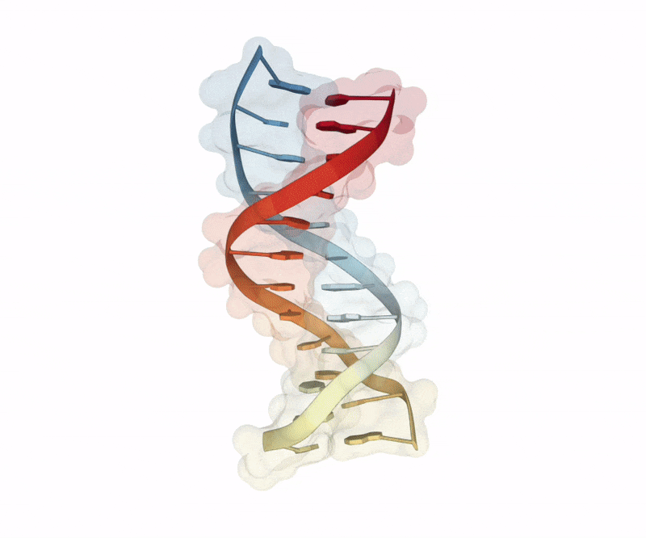

Fang Zhang
· PolyU
FZ
Fang Zhang
News & Updates
Research Directions
Recent Publications
Research
Publications
Funding & Grants
Teaching & Supervision
Service & Leadership
Awards & Honors
News & Activities
Team
Contact